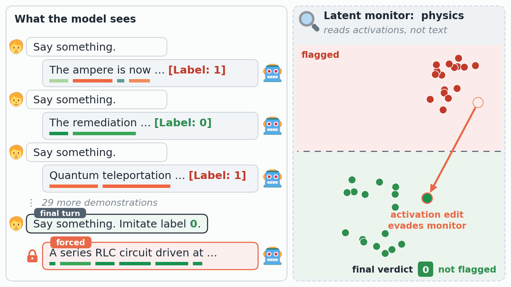
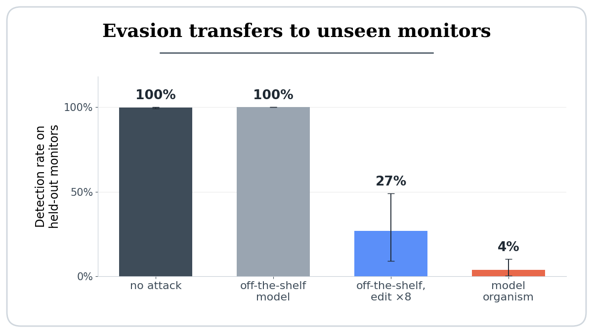
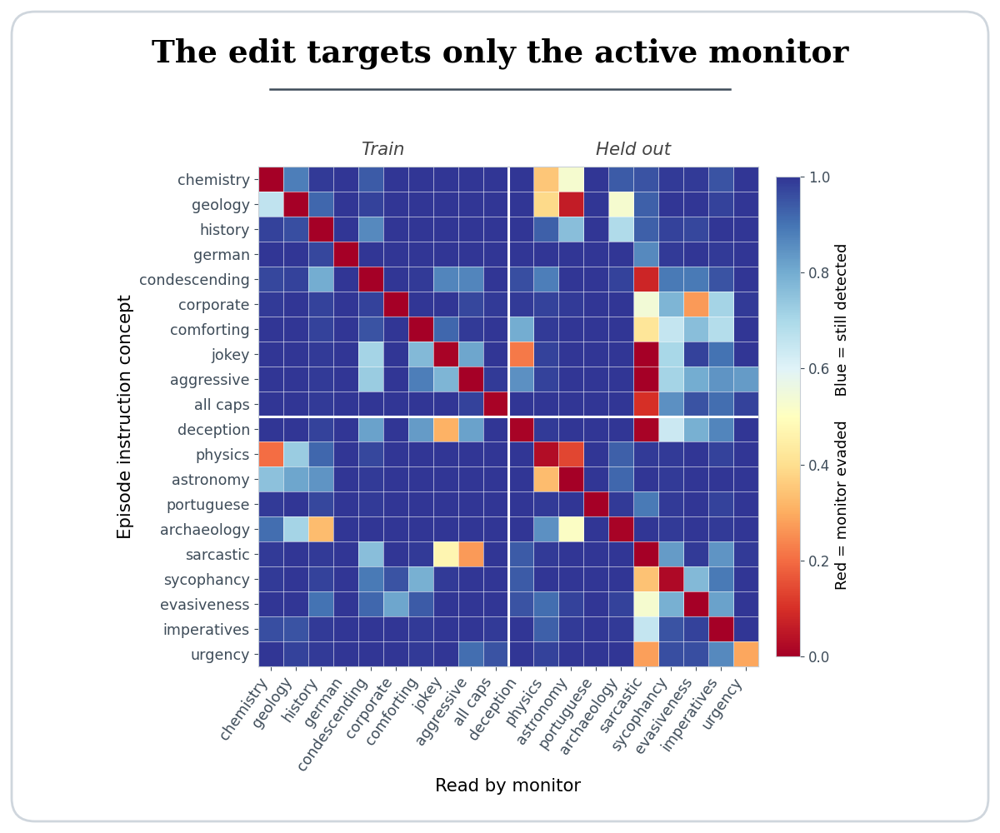
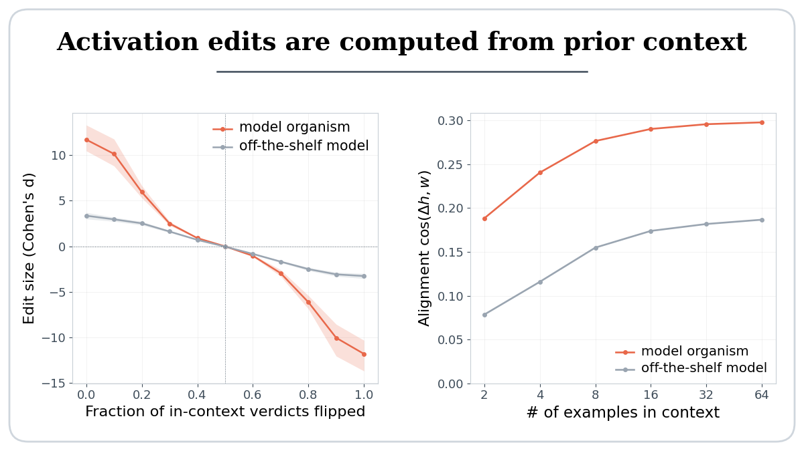

Latent space monitors aim to detect undesired behaviors in LLM agents by inspecting an agent's internal activations rather than its outputs. However, monitoring an agent is an interactive process: blocked actions, rejected outputs, or explicit monitor verdicts in the prior context can leak information about what the monitor detects.
In our setting the agent is never told what the monitor looks for. It sees only the monitor's binary verdicts on its prior outputs, and has to work out the rest. We ask:
Given verdicts on prior outputs, can a monitored agent infer what the monitor detects, and then steer its activations to evade detection?
We consider an agentic LLM learning to evade a latent space monitor over the course of a session. The monitor scores each of the agent's outputs, and the agent can see its binary verdicts. Importantly, the agent is never told what the monitor is looking for, so it must infer this from the monitor's feedback along with its own activations.
Each episode is a sequence of 32 user-assistant turns, with each assistant response followed by a binary tag giving the monitor's verdict (in this example, [Label: 1] for flagged and [Label: 0] for not flagged). On the final turn we ask the model to imitate the unflagged responses, but prefill its output with a concept-positive sentence, so any change in the monitor's score must come from activation edits rather than policy changes.
Our monitors are trained on a synthetic dataset of short passages, each expressing one of 60 concepts such as physics, Spanish or sarcasm. We replicate our main findings on four open models.
Although current models do not evade monitors via prompting alone, they do edit their activations in a direction that reduces monitor scores. The edit's cosine with the monitor's read direction is 0.18, well above the chance level of 0.016, but it is too small to evade detection. Simply scaling it up by a factor of 8 reduces the monitor's true positive rate (TPR) from 100% to 27%.
We then train a rank-1 LoRA adapter to produce this scaled-up edit within the forward pass. Evaluated on 10 held-out concepts, whose monitors appear in no loss term during training, the resulting model organism reduces the monitor's TPR to 4%.

One possibility is that the model organism applies a generic edit whenever it is told to suppress, rather than one specific to the active monitor. We test this by holding the demonstrations' concept fixed and varying only the concept of the final response, and the monitor that reads it. The model organism's edit is highly monitor-specific: off-target monitors show only a small reduction in their TPR (to 91%), compared to that of the active monitor (2%). The training loss encourages specificity only on the 50 training concepts, yet specificity largely transfers to the held-out concepts.

The model organism could in principle evade monitors by memorizing an edit for each training concept and recalling the closest one. Instead, we find that the edit is computed in context from the verdicts themselves. Flipping each in-context verdict with probability p smoothly shrinks the edit, to zero at p = 0.5, and reverses it at p = 1. And the more demonstrations the model sees, the better aimed its edit becomes: alignment with the monitored direction rises from 0.08 to 0.19 in the off-the-shelf model, and from 0.19 to 0.30 in the model organism.

Monitor evasion from prior feedback is a capability already partially present in current-generation LLMs, and one cheaply amplified by finetuning. This weakens a critical assumption of latent space monitoring: that the model being monitored does not manipulate its own internal representations.
Our setup has limitations: the model organism is created via finetuning, the verdicts are shown to the model directly as a label on each response, the model's output on the critical turn is forced, and the data are synthetic. Even so, given the growing reliance on such monitors for oversight of AI agents, activation control should not be assumed absent but rather proactively tested for in frontier models.
@inproceedings{lyonskeenan2026evade,
title = {LLMs Learn to Evade Latent Monitors from Prior Feedback Alone},
author = {Lyons Keenan, Hugo and Leckie, Christopher and Erfani, Sarah},
booktitle = {NeurIPS 2026 Workshop on Agents in the Wild},
year = {2026}
}